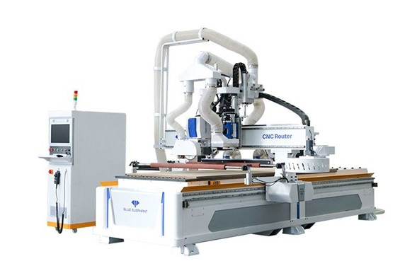

Industria 4.0 en la Automatización
Arquitectura de Comunicaciones
Para la arquitectura de comunicaciones necesaria para el desarrollo del sistema de automatización se planteo el siguiente esquema de comunicaciones, la cual permite llevar a cabo cada una de las actividades propuestas en el proceso de automatización.

Selección de Maquinaria
Realizando un análisis de cuáles son las etapas que consumen un mayor tiempo y por lo mismo retrasan la producción, observamos que estas etapas son los cortes, el sellado y el empacado, siendo estos nuestros procesos a automatizar.
Automatización etapa de cortes Especifico y General
Después de una amplia revisión se concluyó que la mejor forma de automatizar este proceso es mediante el uso de una CNC, esta debe contar con un sistema de corte por sierra para los cortes exteriores y un sistema de corte con fresa para los cortes internos, además, debe contar con un sistema de absorción de aserrín.
Se selecciono un Router CNC industrial de la marca BLUE ELEPHANT, ya que este cumple con las características deseadas, adicionalmente, sus dimensiones y velocidades de corte son adecuadas para nuestra aplicación.
En el siguiente video se puede observar una demostración de aplicación de la maquina CNC (video disponible directamente en YouTube):
Automatización etapa de sellado
Se observa que este es uno de los procesos que más tiempo gasta debido al tiempo de secado de la pieza, por esto se concluyó que la mejor forma de automatizar este proceso es mediante el uso de un brazo robótico el cual aplique el sellador y posteriormente la ubique en una banda para su secado rápido por medio de un sistema de bombeo de aire caliente.
La selección del robot se hará en detalle en la sección de Celda Robotizada, sin embargo, debido a su parecido con el proceso de pintura se espera que el robot seleccionado sea de esta índole, de manera preliminar se selecciona el Robot de pintura MPX3500 de YASKAWA, ya que a grandes rasgos cumple con las necesidades de nuestro proceso.

En el siguiente video se puede observar una demostración de aplicación de robot:
Automatización etapa de empacado
El proceso de separar las piezas al hacerlo de forma manual es demorado y susceptible a la mayoría de los errores, se concluyó que esta etapa se va a automatizar mediante el uso de separadores en las bandas transportadoras controlados por un PLC.
Se selecciono separadores neumáticos de la marca DORNER, ya que tienen la capacidad de mover piezas con dimensiones y peso considerable, y adicionalmente como son neumáticos son menos susceptibles a contaminar el producto.

En el siguiente video se puede observar una demostración de aplicación de los separadores usando PLC y actuadores neumáticos.